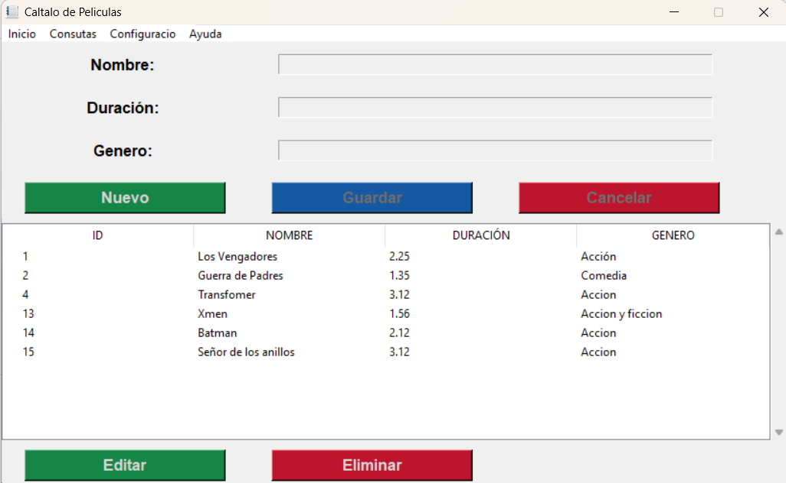
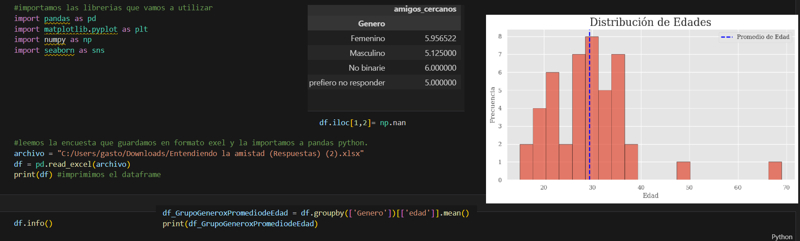

Estudiante de programación y desarrollo web.
Me apasiona la tecnología y el desarrollo de software. Actualmente estudio 🎓 programación y análisis de datos.
🔍 Estudiante de Tecnicatura Universitaria en Programación - UTN | Analista de Datos - UBA
💻 Desarrollador Python con experiencia en Pandas, Matplotlib, NumPy, Tkinter y Flask.
🗄️ Bases de Datos: SQL Server, MySQL y MariaDB.
🌐 Tecnologías Web: HTML, CSS, JavaScript y Bootstrap.
🛠️ Técnico en Computación especializado en armado, reparación y mantenimiento de computadoras.

Aplicación desarrollada con Python y Tkinter para gestionar películas. base de datos SQLite. Permite agregar, editar y eliminar registros incluyendo nombre, duración y género.
Ver proyectoAplicación web desarrollada con Flask, Python, HTML y CSS. Permite analizar datos y mostrar gráficos interactivos utilizando Matplotlib.
Ver proyecto
Portfolio desarrollado con Python, Flask, MySQL, HTML, CSS y Bootstrap. El proyecto incluye un sistema de análisis de datos realizado en Python utilizando librerías como Pandas, NumPy y Matplotlib para procesar, analizar y visualizar estadísticas mediante gráficos interactivos y tableros dinámicos.
Ver proyecto